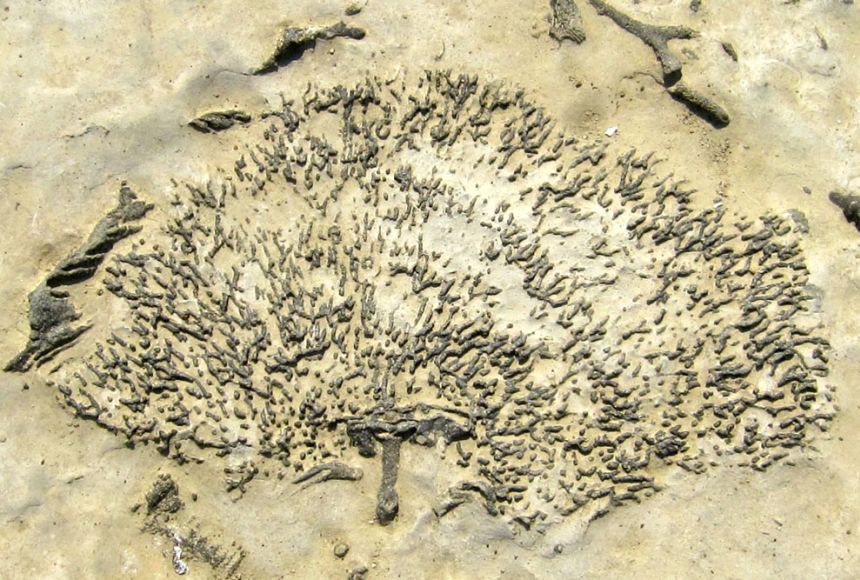

/about
Helpful evals for understanding model capability across science.
Benchmarks are fossils;
Across familiar science evals used for frontier models, both closed-source and open-weight, it is easy to get lost in tables that force us to second-guess where benchmarks overlap, where they saturate, and which capabilities still remain weakly measured. This page gathers those fossils and gives you a single artifact per model for evaluating scientific capability.

Coral Fossil
Some specimens of coral, like the one in this photograph, were fossilized more than 450 million years ago. The presence of coral fossils in areas like the U.S. state of Kansas or the country of Mongolia help show that such landlocked areas were once part of large, inland seas.
Photograph by Marci Matthews, MyShot National Geographic
Collection of benchmarks useful for scientists evaluating the capabilities of frontier models across open-weight and private systems.
Fossils preserve the imprint of vanished worlds; benchmarks do something similar for language models, pressing on their weights until hidden structure becomes visible through what they can recover, connect, and reason about.
The goal here is to gather evals helpful for understanding the capabilities of models across a broad swath of science benchmarks, then make the material judgement to compare, annotate, and revisit, while showing what each benchmark actually probes when it comes to retrieval, multi-step reasoning, structured extraction, and the problems where frontier models still have real room to improve.